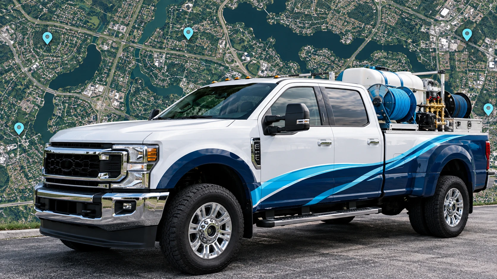

✓ Made for your surfacesSoft wash or pressure wash, as appropriate
↗ Clear next stepsA straightforward quote before work begins
✦ Curb appeal, restoredExterior spaces that feel welcoming again
WHAT WE WASH
A cleaner exterior
starts here.
Every surface gets the right method and careful attention—never a one-size-fits-all blast.


THE WATERWORX DIFFERENCE
Clean work.
Clear standards.
Great washing is about more than high pressure. We show up on time, protect your property, do the details right, and leave everything better than we found it.
- Surface-safe cleaning methods
- Clear quotes with no surprises
- Respectful, trained local crew
SEE WHAT A THOROUGH CLEAN CAN DO
The transformation speaks for itself.
Explore the same view before and after a surface refresh.
 BeforeAfter
BeforeAfter BeforeAfter
BeforeAfter BeforeAfter
BeforeAfterIllustrative examples. Results vary by surface and condition.
THE WATERWORX EXPERIENCE
Simple to book. Satisfying to see.
Show us the job
Tell us what you want cleaned and share photos if you have them.
Get a clear plan
We recommend the right method and explain what is included in your quote.
Enjoy the refresh
A cleaner driveway, siding, patio, or entry makes the whole property feel renewed.
A CLEANER VIEW, WHERE YOU ARE
LET’S MAKE YOUR PLACE THE NEXT STOP.
Tell us your address and what needs attention. We’ll confirm availability and provide a straightforward estimate.
Check Availability →
YOUR NEXT CLEAN STARTS HERE
READY TO SEE YOUR PROPERTY SHINE?
Tell us about your exterior and we’ll help you choose the right cleaning plan.
Get a Free Quote →GET YOUR FREE QUOTE
Ready for a
fresh start?
Share a few details and we’ll get back to you with a quick, straightforward estimate.
Questions? Share them in the project details.